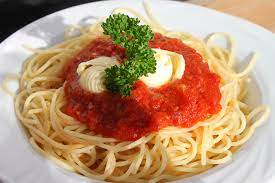

Spaghetti

Description
Spaghetti is a long, thin, solid, cylindrical pasta. It is a staple food of traditional Italian cuisine. Like other pasta, spaghetti is made of milled wheat, water, and sometimes enriched with vitamins and minerals. Italian spaghetti is typically made from durum-wheat semolina.
Ingredients
- all-purpose flour
- eggs
- a little water
- olive
Steps
- Boil Water. Start with a very large pot of water, about 6 quarts per pound of pasta
- Add Salt. Put in a lot of salt, about 3 tablespoons
- Add the Pasta
- Stir
- Taste the Pasta
- Drain
- Removing Ravioli
- Stir In the Sauce